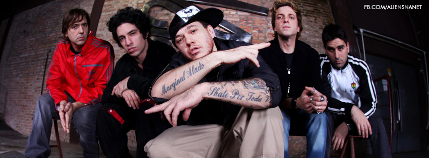

Charlie Brown Jr. é uma banda de rock do Brasil formada em Santos no ano de 1992.
Segue a linha hardcore com influências do punk rock californiano, e mistura vários ritmos como o reggae, o hip-hop, criando um estilo próprio.
Todos os membros da banda são naturais da cidade de Santos, exceto o vocalista Chorão, que nasceu em São Paulo.

INTEGRANTES
Chorão (vocal) | Champignon (baixo, beatbox e vocal de apoio) | Marcão Britto (guitarra e vocal de apoio)|
Thiago Castanho (guitarra e vocal de apoio) | Bruno Graveto: (bateria)